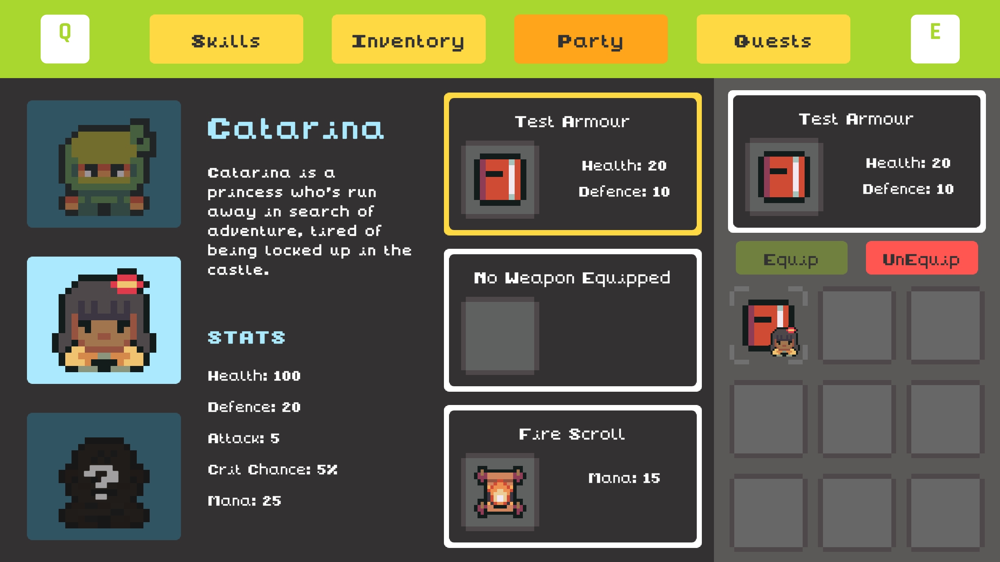
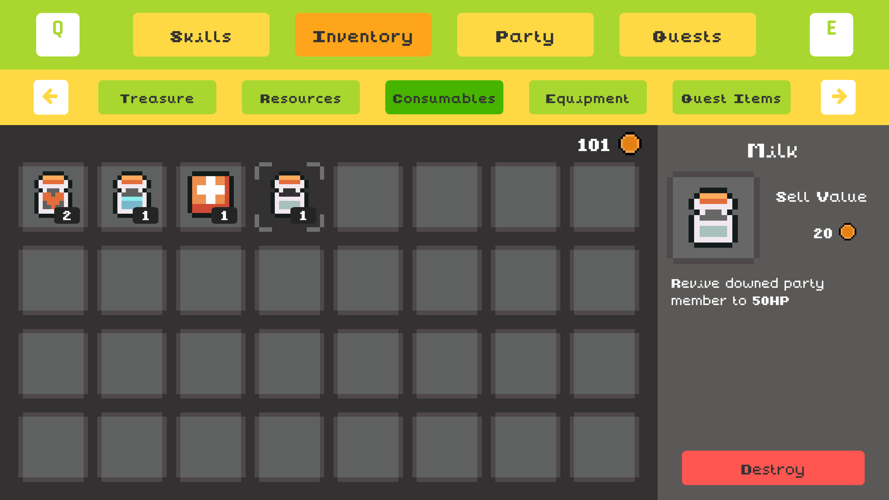
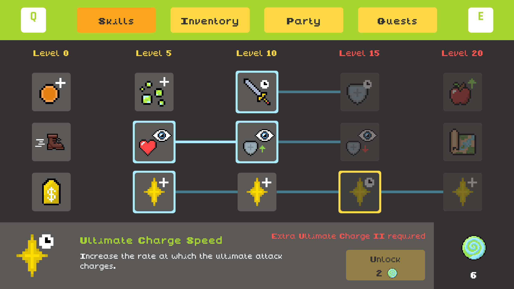

Screenshots




A 2D RPG puzzle adventure where you save the animals from corruption spreading throughout the land.
Download on Itch.io View ScreenshotsA dark mist has spread across the forest, corrupting wildlife and poisoning the land. Take control of Eryn and their loyal hamster Milo on a journey to uncover the source of the corruption. Explore ancient temples, gather teammates, unlock elemental powers, and defeat the evil rat Nox.
Strategic battles against corrupted wildlife using reactive enemy AI.
Every temple layout is unique, giving each run fresh exploration and challenge.
Unlock fire, wind and ice abilities to defeat enemies and access new paths.
Play top-down exploration sections and hamster platforming sequences.
Discover hidden paths, treasure chests and optional challenges.
Gain experience, improve stats and equip stronger items.



The once peaceful forest is falling into darkness. Animals have become hostile, ancient temples lie dormant, and corruption spreads deeper every day. With Milo by your side, you must brave dangerous lands and restore balance before it is too late.

Computer Science – Game Development
Supervisor: Brendan Lyng
The Mist was developed in Unity for Windows PC as a final year project focused on RPG systems, procedural generation and reactive AI.